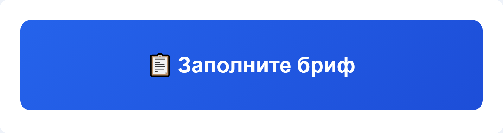
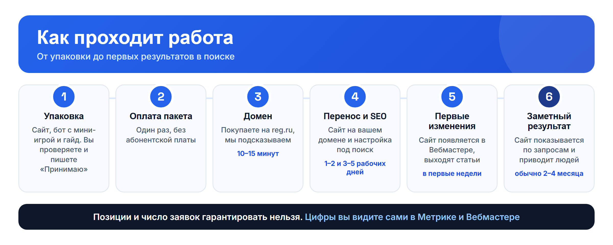
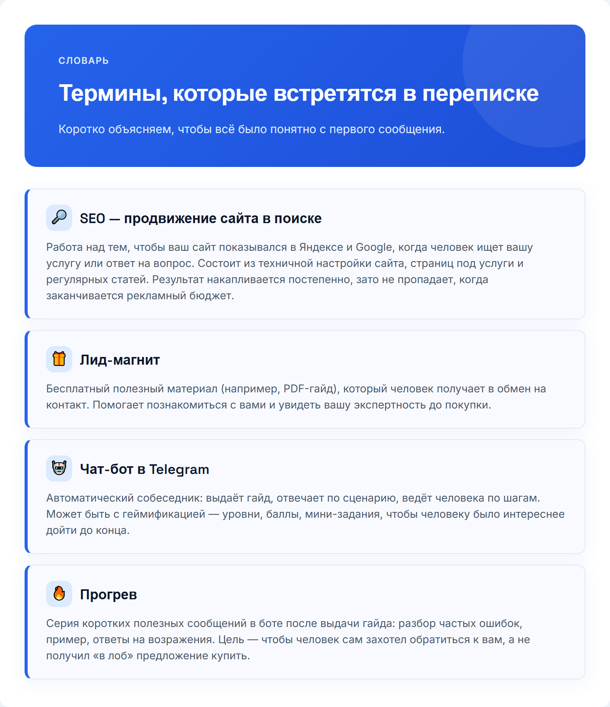
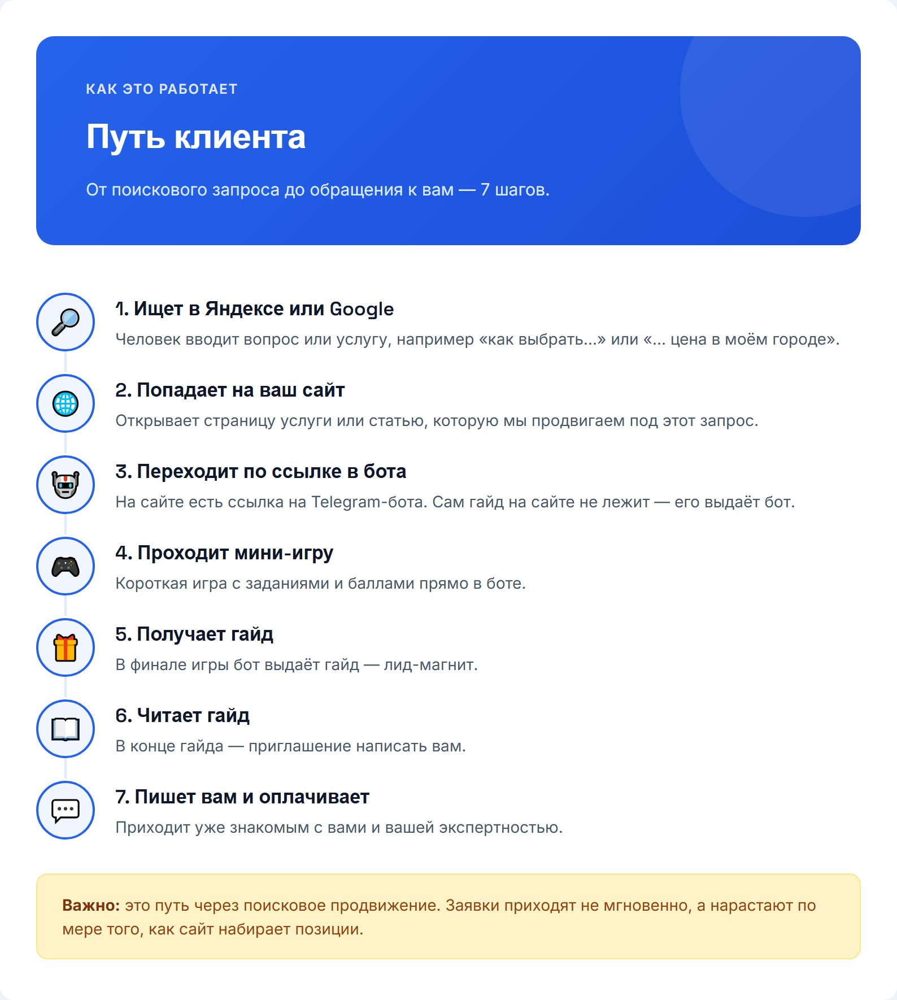
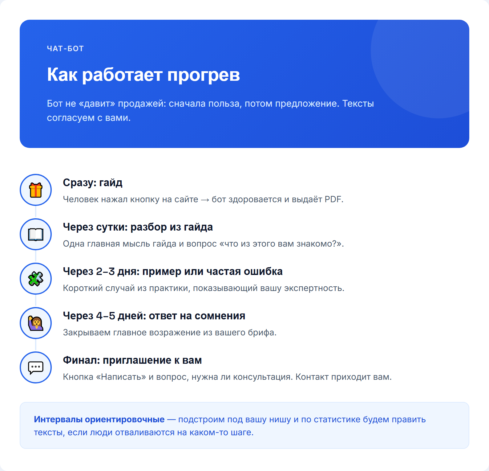
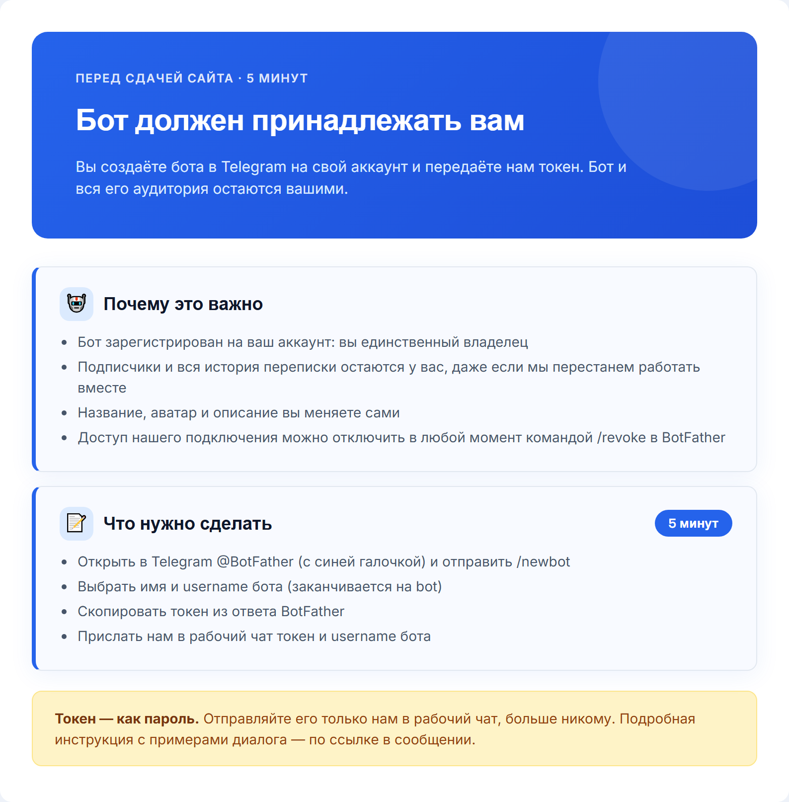
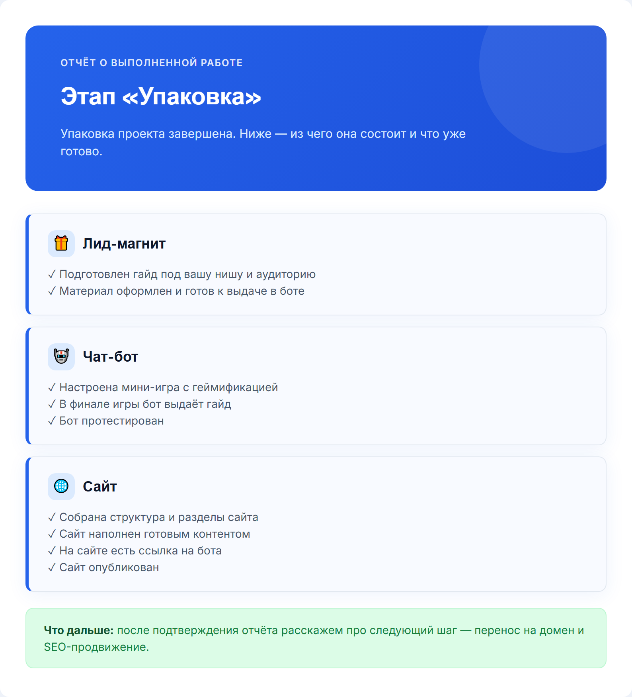
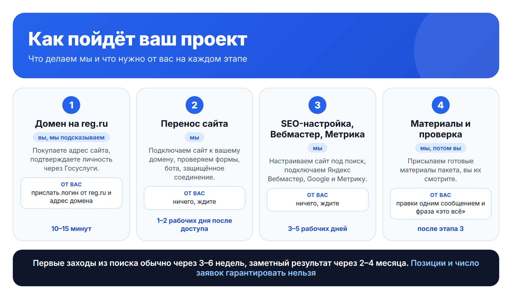
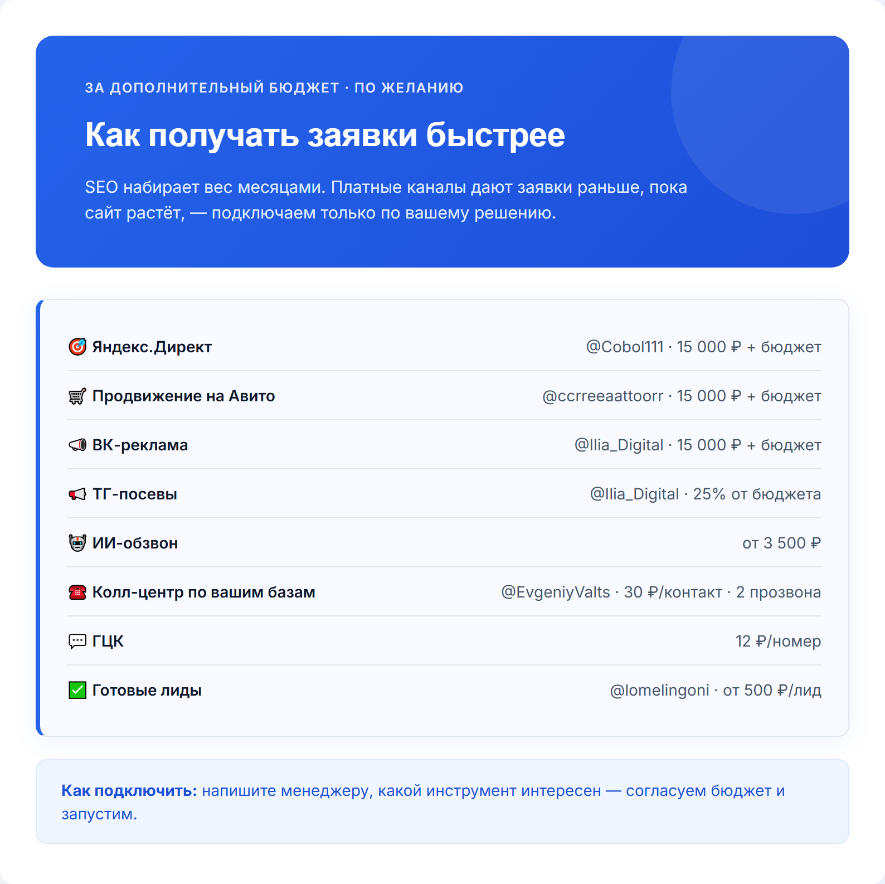

3/бриф

Скачать файлОтветьте на вопросы ниже — это нужно для точных целевых заявок. Нет ответа или не уверены — просто пропускайте. Можно голосовым. 🏢 О БИЗНЕСЕ 1. Сфера/ниша (напр.: психолог, брокер по новостройкам) 2. Конкретное предложение — что продаёте (напр.: «Продвижение Instagram») 3. Город(а) работы 4. Тип клиента: B2B / B2C / B2G 📊 ПОКАЗАТЕЛИ 5. Сколько клиентов сейчас в месяц (напр.: 5) 6. Желаемая выручка в месяц (напр.: 700 000 ₽) 7. Клиентский цикл (разовая покупка / подписка / долгий проект) 💰 УСЛУГИ И ЦЕНЫ 8. Список услуг с ценами, нумеруйте 8.1, 8.2... Напр.: 8.1 Курс — от 999 ₽, 8.2 Сессия 1.5ч — 7 500 ₽ 👤 АУДИТОРИЯ 9. Портрет идеального клиента (напр.: «Женщины 25-35, Москва») 10. Главная боль аудитории (напр.: «Нет заявок с сайта») 11. Ключевое возражение (напр.: «Дорого») 12. Измеримый результат (напр.: «+40% заявок») 13. УТП (напр.: «Первый месяц бесплатно») 🎯 ОЖИДАНИЯ И РАБОТА 14. Что для вас успех через 3 месяца: сколько заявок или клиентов? (напр.: «10 заявок в месяц») 15. Кто у вас принимает заявки и как быстро отвечает? (напр.: «Я сама, в течение часа») 16. Сколько часов в неделю готовы уделять проекту? (напр.: «2–3 часа») 17. Пришлите 2–3 ваших поста, ответа клиенту или голосовое/текст, как вы обычно говорите (чтобы гайд звучал как вы) 🔗 Ссылки: ВК, ТГ, Instagram, бот, сайт, YouTube/Рутуб
3а/памятка_договорённостей
Без картинки
Спасибо за бриф, всё получили и берём в работу. Чтобы дальше всё шло без неожиданностей, коротко фиксируем то, о чём мы договаривались в видео, которое мы присылали в чат. Если захотите ещё раз проверить, посмотрите его на нужной минуте (она указана в скобках): 1. 20 000 ₽ — упаковка (минута 11:20). 2. Заявки оплачиваются отдельно, только подтверждённые; рекламный бюджет — отдельная статья, ориентир по вашей нише — сумма из таблицы (минута 14:05). 3. 10% — только с чистой прибыли (минута 09:30). 4. Результат зависит и от ваших действий; выполнение рекомендаций и обратная связь — условия гарантии (минута 12:08). Если всё так, ответьте «Согласен». Если что-то звучало иначе, напишите, какой пункт, и мы сверим.
2/что_будет_и_когда

Скачать файлЧтобы вам было спокойно и понятно, коротко о том, как пойдёт работа: 1. Сначала «Упаковка»: сайт, бот с мини-игрой и гайд. Мы готовим, вы проверяете и пишете «Принимаю». 2. Дальше SEO: перенос сайта на ваш домен и настройка под поиск, чтобы вас находили без рекламы. 3. Результат в поиске приходит не сразу: первые изменения видны в первые недели, заметный результат обычно через 2–4 месяца. Позиции и число заявок гарантировать нельзя, и это честно для любого SEO. Мы делаем свою часть работы, а цифры вы видите сами в Метрике и Вебмастере. Напишите, пожалуйста, одной строкой своими словами: за что вы платите сейчас и за что будете платить дальше.
4/термины

Скачать файлПара терминов, которые будут встречаться в переписке — коротко объясняем:
5/путь_клиента

Скачать файлВот как человек проходит путь от поиска в Яндексе до обращения к вам. Важно: это путь через поисковое продвижение. Заявки приходят не мгновенно, а нарастают по мере того, как сайт набирает позиции.
6/бот_как_работает

Скачать файлТак будет работать бот: человек приходит по ссылке с сайта, проходит мини-игру, а в финале получает гайд. Задания и тексты согласуем с вами.
7/перенос_бота

Скачать файлПеред тем как передать вам сайт, нужно перенести бота на ваш аккаунт. Сейчас бот создан в нашей системе. Правильно, чтобы он принадлежал вам: тогда бот, его аудитория и вся история переписки остаются у вас, даже если мы однажды перестанем работать вместе. Название, аватар и описание вы сможете менять сами. Что нужно сделать (5 минут): 1. Откройте в Telegram @BotFather (с синей галочкой) и отправьте команду /newbot 2. Выберите имя бота и username латиницей, он должен заканчиваться на bot 3. Скопируйте токен, который пришлёт BotFather 4. Отправьте нам сюда в чат токен и username бота Пошаговая инструкция с примерами диалога: https://murzzsite.github.io/bot-token-guide/ ❗ Токен — как пароль от бота. Отправляйте его только нам в этот рабочий чат, не публикуйте нигде и никому больше не показывайте. Когда пришлёте токен, мы подключим бота и сразу отправим вам готовый сайт.
8/сайт_отправка
Без картинки
Здравствуйте! @{НИК_КЛИЕНТА}
Посадочная страница/сайт: {ССЫЛКА_НА_САЙТ}
Заявки с сайта приходят в Telegram-бот — активируйте его по ссылке: {DEEP_LINK_БОТА}
❗ Сейчас вносим первый круг правок, следующий будет уже при переносе сайта на ваш домен. Поэтому подготовьте, пожалуйста, всё сразу и пришлите одним текстовым сообщением (скриншоты и голосовые техспециалист не принимает): так мы учтём всё за один заход и ничего не потеряем.
❗ Если нужно добавить фото — присылайте ТОЛЬКО ссылкой на Яндекс.Диск с открытым доступом («доступно всем, у кого есть ссылка»), мы извлечём фото оттуда. По-другому техспециалист и программа файлы не принимают.
❗ Когда напишете все правки, ОБЯЗАТЕЛЬНО добавьте фразу "это всё" — так мы поймём, что можно брать в работу.
Также нужно уточнить пару моментов:
{УТОЧНЕНИЕ_1}
{УТОЧНЕНИЕ_2}9/упаковка_готова

Скачать файлГотов этап «Упаковка» — все материалы созданы. Теперь у вас есть сайт, бот с мини-игрой и гайд, который человек получает в финале игры. Проверьте: 1. Ссылка сайта открывается с телефона. 2. Бот отвечает и проходит мини-игру до гайда. 3. Форма на сайте отправляется, и заявка приходит вам. Когда вам удобно посмотреть: сегодня или завтра? Если всё устраивает, напишите «Принимаю», и перейдём к следующему этапу: покажем, как сделать, чтобы вас находили в поиске сами.
9а/кабинет_после_принятия
Без картинки
Упаковка принята, спасибо! Теперь три шага в личном кабинете на бирже:
1. Зарегистрируйтесь по ссылке: {ССЫЛКА_НА_ПЛАТФОРМУ}
Инвайт-код: {ИНВАЙТ_КОД}
В поле «связь» укажите ваш ник в Telegram, а не канал.
2. Подтвердите e-mail и пришлите нам логин и пароль от кабинета, чтобы мы подключили проект.
3. Загрузите подписанный акт: он фиксирует, какие материалы вам переданы по договору. Без акта кабинет остаётся закрытым.
В кабинете вас ждут «Распаковка» и «Рекомендации»: это материалы и пошаговые задания по продвижению. Кабинет нужен для работы с ними. Заявки на ваш сайт приходят из сайта, бота и SEO, о них мы пишем отдельно.
С чего вам удобно начать: регистрация сегодня или завтра?37/видео_кабинет
Без картинки
Короткое видео, как работать в личном кабинете: {ССЫЛКА_НА_ПЛАТФОРМУ}
В нём: что такое «Распаковка эксперта» и «Рекомендации», как открыть задачу, взять готовый материал и приложить отчёт о выполнении.
Углублённые Распаковка и Рекомендации (пакеты «Стандарт» и «Максимум») появятся в кабинете, мы напишем, когда будут готовы. Остальные материалы лежат на вашем домене, ссылки пришлём после переноса сайта.
Вопросы пишите сюда 🙂37а/где_в_кабинете_что
Без картинки
Где в кабинете что лежит. Откройте страницу вашего проекта: вверху блок «Распаковка эксперта», ниже блок «Рекомендации». 1. Распаковка эксперта — фундамент: кто ваш клиент, чем вы отличаетесь от конкурентов и как вы продаёте. Черновики уже подготовлены, вам нужно только подправить их под себя. 2. Рекомендации — задачи по продвижению по категориям: контент, карты и площадки, работа с вашей базой и другие. В каждой карточке есть готовый материал и место для отчёта. Откройте карточку, заберите материал, выполните задачу, коротко напишите, что сделали, и приложите подтверждение (скриншот или ссылку). Начните с Распаковки, потом переходите к Рекомендациям. Это часть работы: чем раньше вы пройдёте оба блока, тем раньше проект заработает в полную силу. И вот как это связано со следующим шагом. Сайт, бот и гайд уже готовы, и ваши задачи в кабинете помогают превратить внимание людей в заявки. А чтобы вас находили в поиске сами, дальше идёт SEO: следующим сообщением пришлём пакеты. Если что-то непонятно или что-то не открывается, пишите сюда, поможем.
10/пакеты_seo


Помните, в начале мы писали, как пойдёт работа? Первый шаг, «Упаковка», готов, дошли до второго: SEO. Сейчас у вас есть сайт, бот и гайд, но их видят в основном те, кому вы сами отправили ссылку. SEO нужно, чтобы вас находили и те, кто прямо сейчас ищет ваши услуги в вашем городе. SEO — это реклама вашего сайта в поиске: сайт на вашем домене начинает появляться в Яндексе и Google, когда ищут ваши услуги, и продолжает приводить людей без платы за каждый клик. Мы уже знаем ваш бизнес и цели по брифу, поэтому подбираем пакет под вашу задачу. Что для вас сейчас важнее? Ответьте цифрой: 1 — чтобы сайт находили в поиске и клиенты приходили стабильно 2 — чтобы заявки шли быстрее, не дожидаясь SEO 3 — пока присмотреться и начать с минимума Три пакета, оплата один раз, без абонентской платы: «Старт» 5 000 ₽, «Стандарт» 7 500 ₽, «Максимум» 8 000 ₽. От «Стандарта» до «Максимума» всего 500 ₽: добавляются карта каналов для Telegram и 2 статьи в неделю в первый месяц. Состав на картинке и по ссылке: https://murzzsite.github.io/seo-packages/ Что мы гарантируем: выполнение работ по списку выбранного пакета. Что не гарантируем: конкретные позиции в поиске и число заявок, это зависит от поисковиков и от вашей ниши, и честно для любого SEO. Первые изменения видны в первые недели, заметный результат обычно через 2–4 месяца. Подробнее о гарантии в видео, которое мы присылали в чат, минуты 12:08–13:02.
11/ответ_на_1 (клиент выбрал 1: стабильно из поиска)
Тогда вам подойдёт «Стандарт» (7 500 ₽): сайт на вашем домене, SEO-настройка, юридический минимум, блог со статьями (от 1 в неделю со 2-й недели), углублённые Распаковка и Рекомендации, скрипты продаж и презентация. Блог — то, что копит трафик в поиске месяц за месяцем. Чтобы начать, напишите: «домен 2». Состав: https://murzzsite.github.io/seo-packages/
12/ответ_на_2 (клиент выбрал 2: быстрее заявки)
Тогда смотрите на «Максимум» (8 000 ₽): всё из «Стандарта» плюс карта каналов для посевов в Telegram (подбираем и проверяем каналы вашей аудитории) и 2 статьи в неделю в первый месяц, дальше по 1. Размещения в каналах оплачиваются отдельно, результат не гарантирован. Чтобы начать, напишите: «домен 3». Состав: https://murzzsite.github.io/seo-packages/
13/ответ_на_3 (клиент выбрал 3: присмотреться)
Тогда «Старт» (5 000 ₽): сайт на вашем домене, SEO-настройка, юридический минимум, тексты для карточек на картах и отзывы. Если позже захотите блог со статьями и материалы для продаж, можно доплатить разницу до «Стандарта». Чтобы начать, напишите: «домен 1». Состав: https://murzzsite.github.io/seo-packages/
14/домен_без_номера
Без картинки
Отлично, начинаем! Подскажите, какой пакет берёте: 1 — Старт (5 000 ₽), 2 — Стандарт (7 500 ₽), 3 — Максимум (8 000 ₽). Состав: https://murzzsite.github.io/seo-packages/ Не уверены, какой выбрать? Напишите, чем занимаетесь и чего хотите от сайта, и подскажем.
15/оплата_принята Старт
Без картинки
Отлично, берём «Старт» (5 000 ₽). Вы получите: сайт на вашем домене, SEO-настройку, юридический минимум, тексты для карточек на картах, QR-плакат и 10 ответов на отзывы, страницу проекта. Блог и материалы для продаж в этот пакет не входят: если захотите, можно доплатить разницу позже.
❗ ВАЖНО ПРО ДОМЕН: ПОНАДОБЯТСЯ ГОСУСЛУГИ
Домен регистрируете вы сами на reg.ru, это около 200 ₽ в год. Сделать это за вас мы не можем, потому что домен оформляется на ваши данные. Мы подключаем к нему сайт и переносим всё остальное.
По Федеральному закону от 29.12.2025 № 569-ФЗ владелец домена в зонах .ru и .рф подтверждает личность через подтверждённую учётную запись Госуслуг. Поэтому заранее подготовьте:
• аккаунт на Госуслугах (подтверждённый);
• телефон, к которому он привязан.
Пошаговую инструкцию по регистрации на reg.ru вышлем сразу после оплаты, сейчас просто будьте готовы. На этом этапе потребуется ваше участие, но это займёт несколько минут. Технический специалист будет на связи и подскажет по каждому шагу.
Дальше всё просто: 1) оплата, 2) домен на reg.ru (10–15 минут, мы подскажем), 3) перенос сайта и SEO-настройка (1–2 и 3–5 рабочих дней).
Оплатить пакет «Старт» (5 000 ₽, оплата разовая) можно по ссылке: {ССЫЛКА_НА_ОПЛАТУ_5000}
Вышлите чек в чат, как проведёте оплату. После этого мы отправим инструкцию, технический специалист поможет зарегистрировать домен и сам перенесёт сайт.
Порядок такой: сначала перенос на домен и SEO-настройка, и только потом отправляем материалы (тексты для карточек на картах, отзывы, страницу проекта): они лежат на вашем домене.16/оплата_принята Стандарт
Без картинки
Отлично, берём «Стандарт» (7 500 ₽). Вы получите: всё из «Старта» плюс блог (от 1 статьи в неделю со 2-й недели), углублённые Распаковку и Рекомендации (в личном кабинете), скрипты продаж, презентацию и скрипт холодных сообщений.
❗ ВАЖНО ПРО ДОМЕН: ПОНАДОБЯТСЯ ГОСУСЛУГИ
Домен регистрируете вы сами на reg.ru, это около 200 ₽ в год. Сделать это за вас мы не можем, потому что домен оформляется на ваши данные. Мы подключаем к нему сайт и переносим всё остальное.
По Федеральному закону от 29.12.2025 № 569-ФЗ владелец домена в зонах .ru и .рф подтверждает личность через подтверждённую учётную запись Госуслуг. Поэтому заранее подготовьте:
• аккаунт на Госуслугах (подтверждённый);
• телефон, к которому он привязан.
Пошаговую инструкцию по регистрации на reg.ru вышлем сразу после оплаты, сейчас просто будьте готовы. На этом этапе потребуется ваше участие, но это займёт несколько минут. Технический специалист будет на связи и подскажет по каждому шагу.
Дальше всё просто: 1) оплата, 2) домен на reg.ru (10–15 минут, мы подскажем), 3) перенос сайта и SEO-настройка (1–2 и 3–5 рабочих дней).
Оплатить пакет «Стандарт» (7 500 ₽, оплата разовая) можно по ссылке: {ССЫЛКА_НА_ОПЛАТУ_7500}
Вышлите чек в чат, как проведёте оплату. После этого мы отправим инструкцию, технический специалист поможет зарегистрировать домен и сам перенесёт сайт.
Порядок такой: сначала перенос на домен и SEO-настройка, и только потом отправляем материалы (скрипты, презентацию, отзывы): они лежат на вашем домене. Углублённые Распаковка и Рекомендации появятся в вашем личном кабинете на платформе, мы напишем, когда они будут готовы.17/оплата_принята Максимум
Без картинки
Отлично, берём «Максимум» (8 000 ₽). Вы получите: всё из «Стандарта» плюс карту каналов для посевов в Telegram и 2 статьи в неделю в первый месяц, дальше по 1. Размещения в каналах оплачиваются отдельно.
❗ ВАЖНО ПРО ДОМЕН: ПОНАДОБЯТСЯ ГОСУСЛУГИ
Домен регистрируете вы сами на reg.ru, это около 200 ₽ в год. Сделать это за вас мы не можем, потому что домен оформляется на ваши данные. Мы подключаем к нему сайт и переносим всё остальное.
По Федеральному закону от 29.12.2025 № 569-ФЗ владелец домена в зонах .ru и .рф подтверждает личность через подтверждённую учётную запись Госуслуг. Поэтому заранее подготовьте:
• аккаунт на Госуслугах (подтверждённый);
• телефон, к которому он привязан.
Пошаговую инструкцию по регистрации на reg.ru вышлем сразу после оплаты, сейчас просто будьте готовы. На этом этапе потребуется ваше участие, но это займёт несколько минут. Технический специалист будет на связи и подскажет по каждому шагу.
Дальше всё просто: 1) оплата, 2) домен на reg.ru (10–15 минут, мы подскажем), 3) перенос сайта и SEO-настройка (1–2 и 3–5 рабочих дней).
Оплатить пакет «Максимум» (8 000 ₽, оплата разовая) можно по ссылке: {ССЫЛКА_НА_ОПЛАТУ_8000}
Вышлите чек в чат, как проведёте оплату. После этого мы отправим инструкцию, технический специалист поможет зарегистрировать домен и сам перенесёт сайт.
Порядок такой: сначала перенос на домен и SEO-настройка, и только потом отправляем материалы (карту каналов для посевов, скрипты, презентацию, отзывы): они лежат на вашем домене. Углублённые Распаковка и Рекомендации появятся в вашем личном кабинете на платформе, мы напишем, когда они будут готовы.18/смена_пакета (если клиент хочет другой пакет)
Без картинки
Конечно, поменять пакет можно. Доплачиваете разницу: со «Старта» на «Стандарт» — 2 500 ₽, со «Стандарта» на «Максимум» — 500 ₽, со «Старта» на «Максимум» — 3 000 ₽. Напишите, какой пакет нужен, и отправим ссылку на оплату. Работы по новому пакету добавляем сразу, порядок прежний: оплата, домен, перенос, материалы.
19/напоминание_1 (через сутки после предложения)
Здравствуйте! Вернёмся к SEO. Как это работает: человек в вашем городе ищет вашу услугу в Яндексе или Google, видит ваш сайт и оставляет заявку. Реклама приводит людей, пока вы платите за клики, а сайт в поиске и статьи работают и дальше. Первые изменения видны в первые недели, заметный результат обычно через 2–4 месяца. Состав пакетов: https://murzzsite.github.io/seo-packages/ Если уже понятно, напишите «домен» и номер пакета. Если есть вопросы, пишите, ответим.
20/напоминание_2 (через 3 дня)
Хотим, чтобы вам было понятно, за что вы платите, а не просто «взять». Скажите, что смущает больше всего: цена, сроки, домен и Госуслуги или результат? Ответим коротко и по делу.
21/напоминание_3 (через неделю)
Последнее напоминание, чтобы не надоедать: предложение по SEO остаётся в силе, пакеты те же. Чем раньше сайт начинает копить трафик, тем раньше появляются первые результаты в поиске. Если решите, напишите «домен» и номер пакета. Если сейчас не время, напишите «позже», и мы вернёмся к вопросу, когда вам удобно.
22/подумаю (если клиент пишет «подумаю»)
Конечно, подумайте. Чтобы думать было проще, три коротких факта: 1) оплата один раз, без абонентской платы; 2) домен принадлежит вам навсегда (около 200 ₽ в год); 3) результаты вы видите сами в Метрике и Вебмастере. Если появятся вопросы, пишите, ответим сразу.
22а/карта_проекта

Скачать файл
Оплату получили, спасибо! Вот карта вашего проекта: что происходит на каждом этапе и что нужно от вас. Сейчас ваш шаг первый, домен. Пошаговая инструкция придёт следующим сообщением, технический специалист на связи. Сохраните карту, чтобы видеть, где мы находимся.
23/домен_regru
Без картинки
Следующий шаг — купить домен на reg.ru. Домен оформляется на вас, это 10–15 минут. Пошаговая инструкция со всеми шагами: https://murzzsite.github.io/regru-guide/ Коротко: 1. Зайдите на reg.ru, найдите свободный адрес (лучше короткий, латиницей, зона .ru — около 200 ₽ в год). 2. Добавьте домен в корзину, лишние услуги (хостинг, почту, защиту) уберите — они не нужны. 3. Зарегистрируйтесь, заполните данные владельца, подтвердите личность через Госуслуги и оплатите. 4. Пришлите сюда в чат логин и пароль от личного кабинета reg.ru и купленный адрес — программист сам подключит к нему ваш сайт. Пароль от Госуслуг нам не нужен, не присылайте его никому. После переноса рекомендуем сменить пароль в кабинете reg.ru. Перенос занимает 1–2 рабочих дня с момента получения доступа.
24/сайт_на_домене Старт
Без картинки
Готово, сайт переехал на ваш домен:
https://{ДОМЕН}
Что сделано:
• подключено защищённое соединение, настроена переадресация со старого адреса
• формы, телефоны и бот проверены
• подключены Яндекс Вебмастер, Google Search Console и Метрика с целью «Заявка»
• на сайте политика конфиденциальности, согласие в формах и плашка cookie
• тексты для карточек на Яндекс Картах, 2ГИС и Google готовы: {ССЫЛКА_НА_ТЕКСТЫ_КАРТОЧЕК}
Ваша постоянная страница проекта:
https://{ДОМЕН}/report/
Там будут цифры и статус работ. Сейчас в цифрах прочерки: первые заходы из поиска обычно появляются через 3–6 недель, топ-10 по средним запросам через 2–4 месяца, без блога рост обычно медленнее. Гарантировать позиции и число заявок нельзя.
Про защищённое соединение: значок замка в браузере включится автоматически. Сертификат выпускает хостинг-площадка, и это происходит на её стороне, поэтому ускорить процесс мы не можем. Обычно это занимает от 15 минут до нескольких часов, в редких случаях до суток. Пока его нет, браузер может показывать пометку «Не защищено»: это временно, сайт при этом работает. Когда замок появится, мы включим принудительное шифрование и сообщим вам.
Домен обновляется по интернету постепенно, до 24 часов. Если у кого-то сайт открылся не сразу, попробуйте через пару часов, с другого устройства или в режиме инкогнито.
Материалы по проекту (QR-плакат и ответы на отзывы) пришлём следующим сообщением. Они уже будут лежать на вашем домене.25/сайт_на_домене Стандарт
Без картинки
Готово, сайт переехал на ваш домен:
https://{ДОМЕН}
Что сделано:
• подключено защищённое соединение, настроена переадресация со старого адреса
• формы, телефоны и бот проверены
• подключены Яндекс Вебмастер, Google Search Console и Метрика с целью «Заявка»
• на сайте политика конфиденциальности, согласие в формах и плашка cookie
• тексты для карточек на Яндекс Картах, 2ГИС и Google готовы: {ССЫЛКА_НА_ТЕКСТЫ_КАРТОЧЕК}
Ваша постоянная страница проекта:
https://{ДОМЕН}/report/
Там будут цифры и статус работ. Сейчас в цифрах прочерки: первые заходы из поиска обычно появляются через 3–6 недель, топ-10 по средним запросам через 2–4 месяца при регулярных статьях. Гарантировать позиции и число заявок нельзя.
Первая статья выйдет на 2-й неделе, дальше от 1 в неделю: бот пришлёт её вам на согласование.
Про защищённое соединение: значок замка в браузере включится автоматически. Сертификат выпускает хостинг-площадка, и это происходит на её стороне, поэтому ускорить процесс мы не можем. Обычно это занимает от 15 минут до нескольких часов, в редких случаях до суток. Пока его нет, браузер может показывать пометку «Не защищено»: это временно, сайт при этом работает. Когда замок появится, мы включим принудительное шифрование и сообщим вам.
Домен обновляется по интернету постепенно, до 24 часов. Если у кого-то сайт открылся не сразу, попробуйте через пару часов, с другого устройства или в режиме инкогнито.
Углублённые Распаковка и Рекомендации ждите в личном кабинете на платформе. Материалы по проекту (скрипты, презентация, отзывы) пришлём следующим сообщением. Они уже будут лежать на вашем домене.26/сайт_на_домене Максимум
Без картинки
Готово, сайт переехал на ваш домен:
https://{ДОМЕН}
Что сделано:
• подключено защищённое соединение, настроена переадресация со старого адреса
• формы, телефоны и бот проверены
• подключены Яндекс Вебмастер, Google Search Console и Метрика с целью «Заявка»
• на сайте политика конфиденциальности, согласие в формах и плашка cookie
• тексты для карточек на Яндекс Картах, 2ГИС и Google готовы: {ССЫЛКА_НА_ТЕКСТЫ_КАРТОЧЕК}
Ваша постоянная страница проекта:
https://{ДОМЕН}/report/
Там будут цифры и статус работ. Сейчас в цифрах прочерки: первые заходы из поиска обычно появляются через 3–6 недель, топ-10 по средним запросам через 2–4 месяца при регулярных статьях. Гарантировать позиции и число заявок нельзя.
Первая статья выйдет на 2-й неделе, в первый месяц по 2 в неделю, дальше по 1: бот пришлёт её вам на согласование.
Про защищённое соединение: значок замка в браузере включится автоматически. Сертификат выпускает хостинг-площадка, и это происходит на её стороне, поэтому ускорить процесс мы не можем. Обычно это занимает от 15 минут до нескольких часов, в редких случаях до суток. Пока его нет, браузер может показывать пометку «Не защищено»: это временно, сайт при этом работает. Когда замок появится, мы включим принудительное шифрование и сообщим вам.
Домен обновляется по интернету постепенно, до 24 часов. Если у кого-то сайт открылся не сразу, попробуйте через пару часов, с другого устройства или в режиме инкогнито.
Углублённые Распаковка и Рекомендации ждите в личном кабинете на платформе. Материалы по проекту (карта каналов для посевов, скрипты, презентация, отзывы) пришлём следующим сообщением. Они уже будут лежать на вашем домене.27/материалы_готовы Старт
Без картинки
Здравствуйте! Материалы вашего пакета готовы и лежат на вашем сайте. Страница проекта со всем в одном месте, сохраните ссылку:
https://{ДОМЕН}/report/
1. Отзывы
https://{ДОМЕН}/reviews.html
QR-плакат для печати и 10 шаблонов ответов на отзывы. Когда заведёте карточку на картах, пришлите ссылку на отзыв: поставим её в плакат.
Все страницы открываются и с телефона.
❗ Сейчас вносим правки по сайту, поэтому проверьте всё и пришлите их сразу одним текстовым сообщением (скриншоты и голосовые техспециалист не принимает), так мы сделаем всё за один заход. Если правки в файле, присылайте ТОЛЬКО ссылкой на Яндекс.Диск или Google Диск.
❗ Когда напишете все правки, ОБЯЗАТЕЛЬНО добавьте фразу «это всё».
Для документов и подвала сайта нужно от вас только: форма (ИП, самозанятость или ООО) и ИНН. Остальное у нас уже есть.28/материалы_готовы Стандарт
Без картинки
Здравствуйте! Материалы вашего пакета на сайте готовы. Углублённые Распаковка и Рекомендации мы готовим в вашем личном кабинете на платформе, они появятся там, и мы напишем, когда будут готовы. Страница проекта со всем в одном месте, сохраните ссылку:
https://{ДОМЕН}/report/
1. Три дополнительных материала
https://{ДОМЕН}/materials.html
Скрипты продаж, презентация и скрипт холодных сообщений.
2. Отзывы
https://{ДОМЕН}/reviews.html
QR-плакат для печати и 10 шаблонов ответов на отзывы. Когда заведёте карточку на картах, пришлите ссылку на отзыв: поставим её в плакат.
Все страницы открываются и с телефона.
❗ Сейчас вносим правки по сайту, поэтому проверьте всё и пришлите их сразу одним текстовым сообщением (скриншоты и голосовые техспециалист не принимает), так мы сделаем всё за один заход. Если правки в файле, присылайте ТОЛЬКО ссылкой на Яндекс.Диск или Google Диск.
❗ Когда напишете все правки, ОБЯЗАТЕЛЬНО добавьте фразу «это всё».
Для документов и подвала сайта нужно от вас только: форма (ИП, самозанятость или ООО) и ИНН. Остальное у нас уже есть.29/материалы_готовы Максимум
Без картинки
Здравствуйте! Материалы вашего пакета на сайте готовы. Углублённые Распаковка и Рекомендации мы готовим в вашем личном кабинете на платформе, они появятся там, и мы напишем, когда будут готовы. Страница проекта со всем в одном месте, сохраните ссылку:
https://{ДОМЕН}/report/
1. Карта каналов для посевов в Telegram
https://{ДОМЕН}/channels.html
Каналы вашей аудитории с охватом и вовлечённостью, список «не берём», план первой волны, три рекламных поста и калькулятор стоимости 1000 просмотров. Размещения оплачиваете вы отдельно, цены называют администраторы каналов.
2. Три дополнительных материала
https://{ДОМЕН}/materials.html
Скрипты продаж, презентация и скрипт холодных сообщений.
3. Отзывы
https://{ДОМЕН}/reviews.html
QR-плакат для печати и 10 шаблонов ответов на отзывы. Когда заведёте карточку на картах, пришлите ссылку на отзыв: поставим её в плакат.
Все страницы открываются и с телефона.
❗ Сейчас вносим правки по сайту, поэтому проверьте всё и пришлите их сразу одним текстовым сообщением (скриншоты и голосовые техспециалист не принимает), так мы сделаем всё за один заход. Если правки в файле, присылайте ТОЛЬКО ссылкой на Яндекс.Диск или Google Диск.
❗ Когда напишете все правки, ОБЯЗАТЕЛЬНО добавьте фразу «это всё».
Для документов и подвала сайта нужно от вас только: форма (ИП, самозанятость или ООО) и ИНН. Остальное у нас уже есть.36/вебмастер_метрика (отдельным сообщением: напоминание или если клиент ещё не сделал)
Без картинки
Здравствуйте! Чтобы сайт быстрее появился в поиске, нужно подтвердить его в Яндекс Вебмастере и Google Search Console и создать счётчик Метрики. Это 10–15 минут, вход в аккаунты нужен только вам, пароли присылать не надо. Пошаговая инструкция: https://murzzsite.github.io/webmaster-guide/ Пришлите нам три вещи, можно по одной: 1. строку yandex-verification из Вебмастера 2. строку google-site-verification из Search Console 3. номер счётчика Метрики Остальное сделаем мы: вставим теги, подключим счётчик и напишем вам, когда можно нажать «Проверить» и «Подтвердить».
38/ускорители

Скачать файл
Если захотите получать заявки быстрее, чем набирает вес SEO, можно параллельно подключить платные каналы — это отдельный бюджет, подключаем только по вашему желанию. Список и цены — на картинке. Пишите — согласуем и запустим.
39/статус (каждые 3–4 дня)
Без картинки
Здравствуйте! Короткий статус по проекту.
Этап: {ЭТАП}
Следующий шаг: {СЛЕДУЮЩИЙ_ШАГ}
Что нужно от вас: {ЧТО_НУЖНО_ОТ_ВАС}
Если что-то непонятно, напишите, ответим.40/статус_без_изменений
Без картинки
Здравствуйте! Статус без изменений: работа продолжается, сейчас этап «{ЭТАП}». Следующий шаг: {СЛЕДУЮЩИЙ_ШАГ}. От вас сейчас ничего не нужно. Если появятся вопросы, пишите.41/контрольная_точка (на 7-й и 21-й день работы)
Без картинки
Здравствуйте! Небольшая сверка: что вам сейчас непонятно по проекту или по тому, что мы делаем? Напишите любые вопросы, даже мелкие, ответим по существу.